STEP 01 · TERRAFORM · PROVIDER
Terraform 개념 — Provider와 워크플로우
Terraform Core + provider 아키텍처required_providers / provider 블록버전 제약 연산자init → Registry → .terraform/워크플로우 5단계와 state 생명주기
개요 — STEP 01 학습 내용
이론적 배경
Terraform은 코어와 provider로 분리된 구조입니다. 코어는 .tf 파싱·의존성 그래프·state 관리만 담당하고, AWS API 호출 같은 실제 작업은 전부 provider 플러그인이 수행합니다. 같은 문법으로 AWS·GCP·Kubernetes까지 관리할 수 있는 이유입니다.
학습 목표
- .tf 코드가 실제 클라우드 API 호출로 변환되는 구조를 설명할 수 있다
required_providers와provider블록의 역할을 구분할 수 있다- 버전 제약(
~> 5.0)의 의미와 필요성을 설명할 수 있다 terraform init이 하는 일과 Registry 역할을 설명할 수 있다- init → plan → apply → destroy 워크플로우와 state의 역할을 설명할 수 있다
핵심 내용
- Terraform Core + provider 아키텍처
- required_providers / provider 블록
- 버전 제약 연산자
- init → Registry → .terraform/
- 워크플로우 5단계와 state 생명주기
- state와 잠금 파일
산출물 · 완료 기준
- required_providers 블록의 의미를 설명할 수 있다
- init 후 생성되는 파일들의 역할을 안다
- apply → state 기록 → destroy의 최소 사이클을 직접 경험한다
- [ ] provider와 코어의 역할 분담을 설명할 수 있다
- [ ]
~> 5.0이 허용하는 버전 범위를 말할 수 있다 - [ ] lock 파일을 커밋해야 하는 이유를 안다
- [ ] state에 무엇이 기록되고 언제 비워지는지 안다
프로젝트 구조
01_terraform/
01_provider.tf — Terraform 설정
02_vpc.tf — Terraform 설정
03_outputs.tf — Terraform 설정
index.html — 포털 페이지
readme.md — 단계 학습 문서
slides/
readme.md — 단계 학습 문서
s01-title.svg — 슬라이드 SVG
s02-what-is-provider.svg — 슬라이드 SVG
s03-architecture.svg — 슬라이드 SVG
s04-required-providers.svg — 슬라이드 SVG
s05-provider-block.svg — 슬라이드 SVG
s06-version.svg — 슬라이드 SVG
s07-init-registry.svg — 슬라이드 SVG
s08-blocks.svg — 슬라이드 SVG
s09-workflow.svg — 슬라이드 SVG
s10-lifecycle.svg — 슬라이드 SVG
s11-review-questions.svg — 슬라이드 SVG
s12-review-answers.svg — 슬라이드 SVG
소스코드 설명
| 파일 | 역할·내용 |
|---|---|
01_provider.tf | terraform/required_providers 블록 — aws provider ~> 5.0 고정 |
단계 간 연결: 여기서 배운 provider 개념이 `02_practice`의 실제 .tf 파일에 그대로 적용됩니다 — `01_provider.tf`가 각 step 디렉터리에 복사되어 있습니다.
슬라이드 — 발표 자료 (SVG)
s01-title · s01 titleSVG
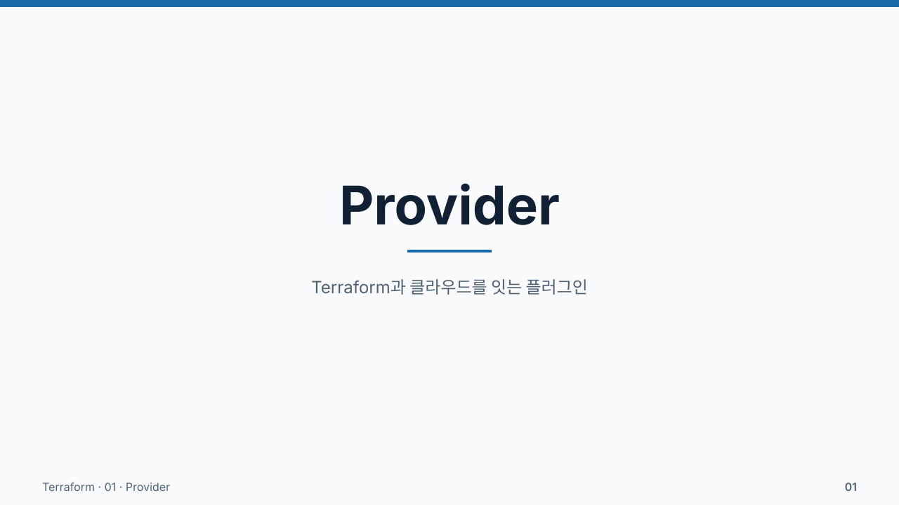
s02-what-is-provider · s02 what is providerSVG
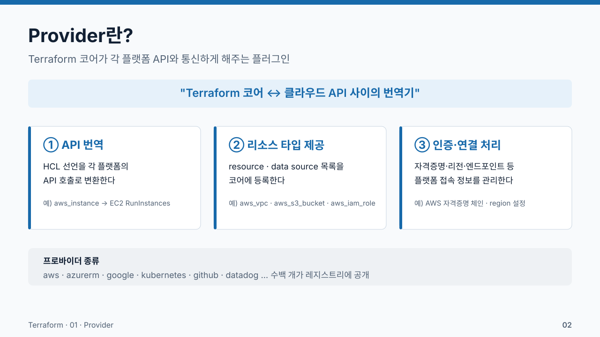
s03-architecture · s03 architectureSVG
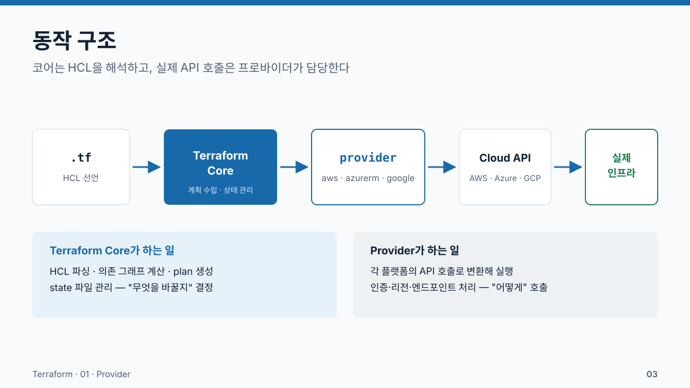
s04-required-providers · s04 required providersSVG
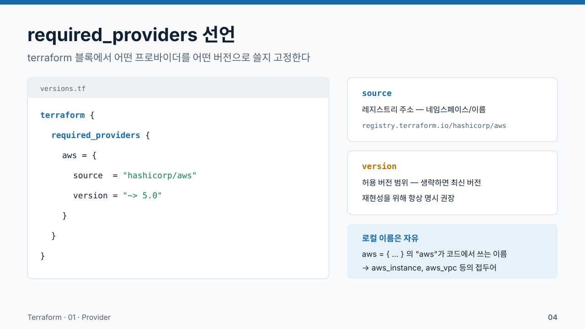
s05-provider-block · s05 provider blockSVG
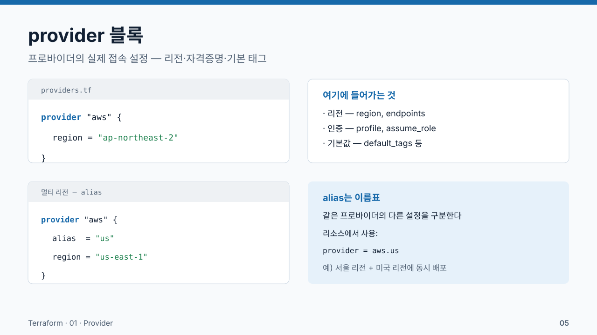
s06-version · s06 versionSVG
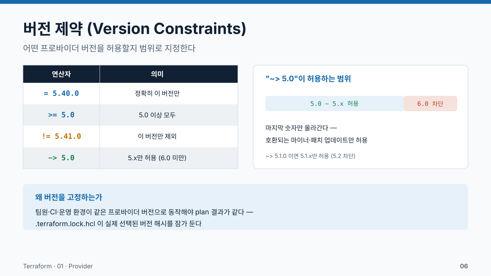
s07-init-registry · s07 init registrySVG
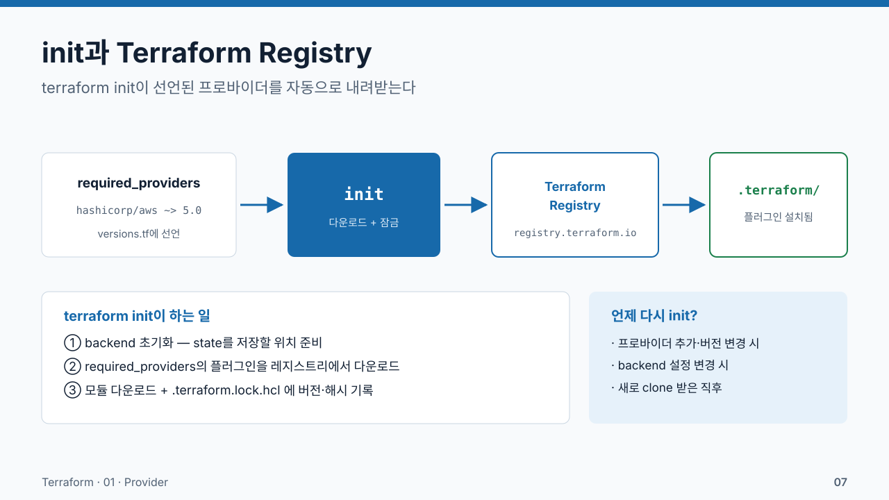
s08-blocks · s08 blocksSVG

s09-workflow · s09 workflowSVG
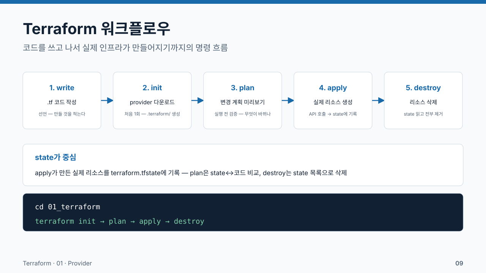
s10-lifecycle · s10 lifecycleSVG
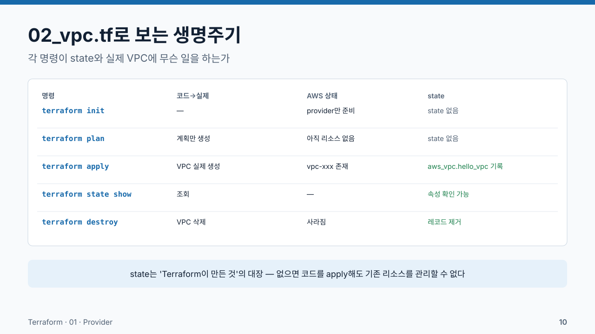
s11-review-questions · s11 review questionsSVG
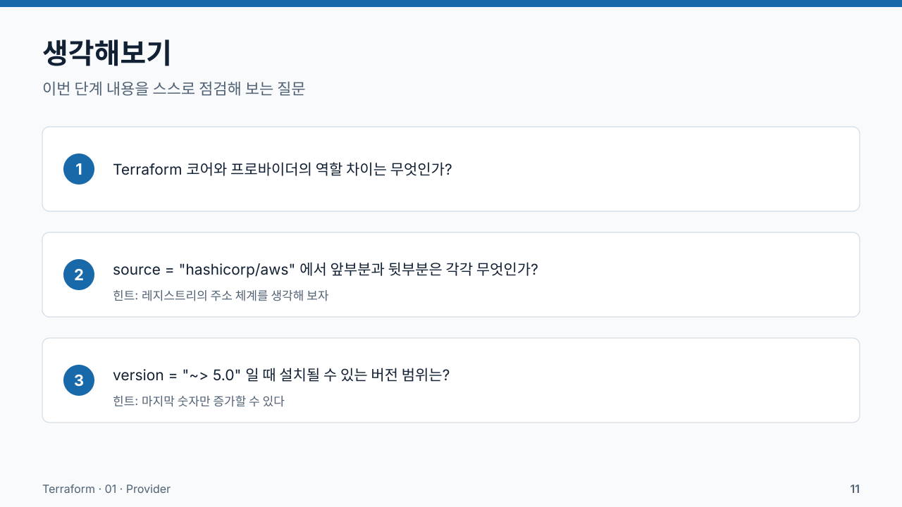
s12-review-answers · s12 review answersSVG
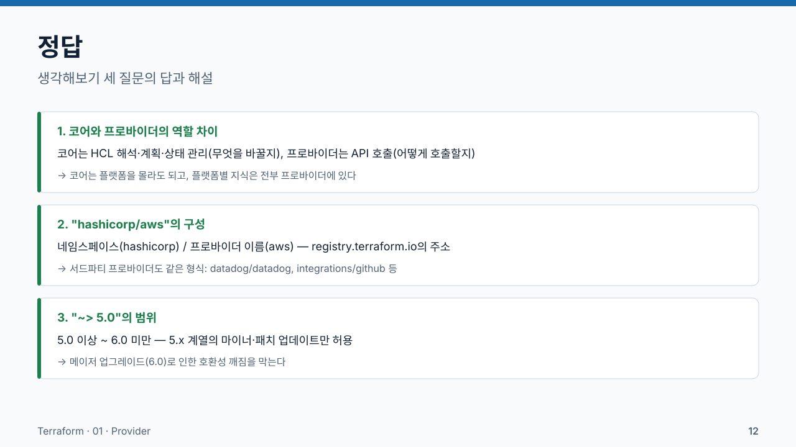
실습 — STEP 01 실행
아래 명령은 터미널에서 프로젝트 루트(aws-tf/) 기준으로 실행합니다.
실행 방법
복사 버튼으로 명령을 가져간 뒤 터미널에 붙여넣기 (⌘V) 하세요.
terraform init # provider 다운로드 → .terraform/, lock 파일 생성소스 구조
파일·디렉터리 역할
| 경로 | 역할 |
|---|---|
01_provider.tf | terraform 블록 + provider "aws" 설정 |
02_vpc.tf | apply/destroy 체험용 aws_vpc.hello_vpc |
03_outputs.tf | terraform output 조회 대상 — 이후 단계의 출력 예제 |
slides/ | s01~s11 슬라이드 — 이론 7 + 워크플로우 2 + 복습 2 |
.terraform/ | init이 다운로드한 provider (커밋 금지) |
.terraform.lock.hcl | provider 버전·해시 잠금 (커밋 대상) |
파일 맵 — .tf ↔ 선언 리소스
| 파일 | 리소스 / 데이터 소스 |
|---|---|
01_provider.tf | (선언 없음) |
02_vpc.tf | aws_vpc.hello_vpc |
03_outputs.tf | (선언 없음) |
※ 브라우저에서는 실행할 수 없습니다 — 명령을 복사해 터미널에 붙여넣으세요.
도움말 — 페이지 사용법
탭 전환
상단 내비게이션을 클릭하면 해당 패널이 표시됩니다. 주소창 해시(#tab-slides 등)로 특정 탭에 바로 이동할 수 있습니다.
SVG 뷰어
- 슬라이드 탭의 SVG 이미지를 클릭하면 팝업 뷰어로 확대 표시됩니다
- 뷰어에서
‹›버튼 또는←→키로 이동합니다 ESC·✕ 닫기· 어두운 배경 클릭으로 닫습니다
단축키
| 키 | 동작 |
|---|---|
← → | 뷰어에서 이전/다음 슬라이드 |
ESC | 뷰어 닫기 |
참고
- 이 페이지는 서버 없이 동작합니다 —
index.html을 브라우저로 바로 열면 됩니다 - 탭 내용과 뷰어의 소스 코드는 생성 시점의 스냅샷입니다 — 원본이 수정되면 페이지 재생성이 필요합니다